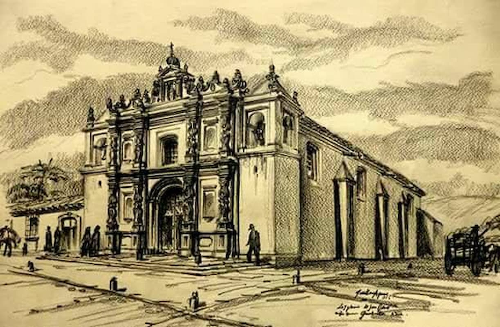

Templo de San José La edificación con característicasbarrocas se destruyó por los terremotos de 1917-1918, se demolió yse reconstruyó, sin embargo, eliminando algunos elementos de fachada que la caracterizaban, como laspilastras serlianas. 
Templo de San José